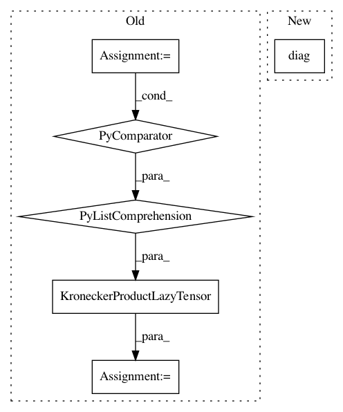

e8a945606e0b3dafe71ce2f1bf1b52ab3b05428c,gpytorch/lazy/kronecker_product_added_diag_lazy_tensor.py,KroneckerProductAddedDiagLazyTensor,_root_inv_decomposition,#KroneckerProductAddedDiagLazyTensor#Any#,217
Before Change
// again, we compute the root decomposition by pulling across the diagonals
dlt_inv_root = dlt.sqrt().inverse()
dlt_root = dlt.sqrt()
symm_prod = KroneckerProductLazyTensor(
*[d.matmul(k).matmul(d) for k, d in zip(lt.lazy_tensors, dlt_inv_root.lazy_tensors)]
)
evals, evecs = symm_prod.symeig(eigenvectors = True)
evals_p_i_root = DiagLazyTensor((evals + 1.).reciprocal().sqrt())
return MatmulLazyTensor(dlt_inv_root, MatmulLazyTensor(evecs, evals_p_i_root))
After Change
// again, we compute the root decomposition by pulling across the diagonals
dlt_sqrt, evals_p_i, evecs = _symmetrize_kpadlt_constructor(lt, dlt)
dlt_inv_root = dlt_sqrt.inverse()
evals_p_i_root = DiagLazyTensor(evals_p_i.diag().reciprocal().sqrt())
return MatmulLazyTensor(dlt_inv_root, MatmulLazyTensor(evecs, evals_p_i_root))
return super()._root_inv_decomposition(initial_vectors=initial_vectors)
In pattern: SUPERPATTERN
Frequency: 3
Non-data size: 6
Instances
Project Name: cornellius-gp/gpytorch
Commit Name: e8a945606e0b3dafe71ce2f1bf1b52ab3b05428c
Time: 2021-02-10
Author: wjm363@nyu.edu
File Name: gpytorch/lazy/kronecker_product_added_diag_lazy_tensor.py
Class Name: KroneckerProductAddedDiagLazyTensor
Method Name: _root_inv_decomposition
Project Name: cornellius-gp/gpytorch
Commit Name: 000b424d2b998b77bd1dae6b9f9f5f36f787a03a
Time: 2020-08-01
Author: balandat@fb.com
File Name: gpytorch/lazy/kronecker_product_lazy_tensor.py
Class Name: KroneckerProductLazyTensor
Method Name: _symeig
Project Name: cornellius-gp/gpytorch
Commit Name: e8a945606e0b3dafe71ce2f1bf1b52ab3b05428c
Time: 2021-02-10
Author: wjm363@nyu.edu
File Name: gpytorch/lazy/kronecker_product_added_diag_lazy_tensor.py
Class Name: KroneckerProductAddedDiagLazyTensor
Method Name: _root_decomposition